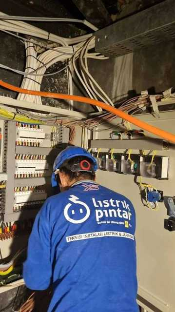
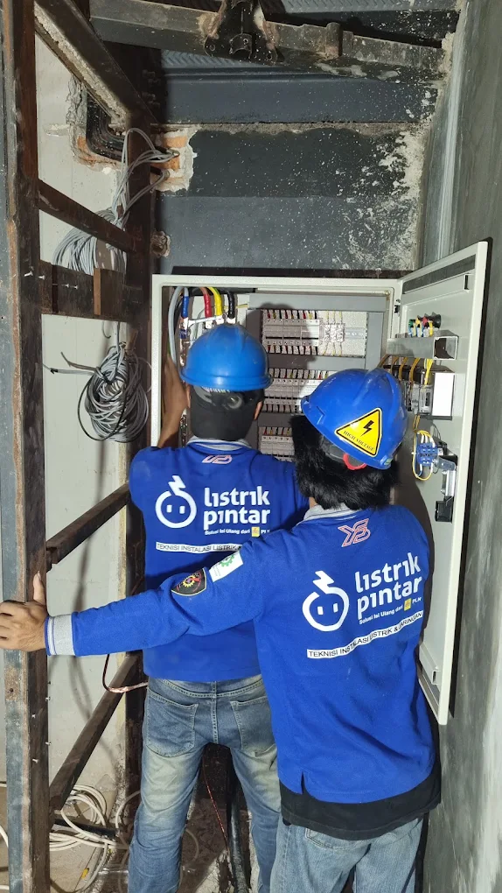
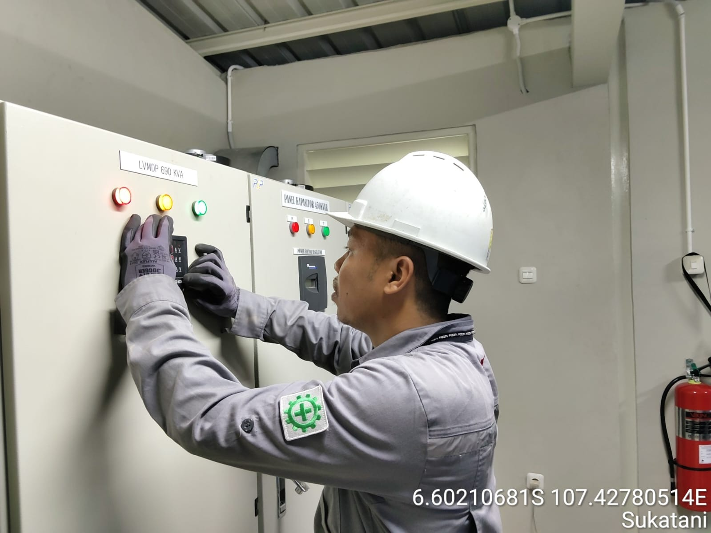
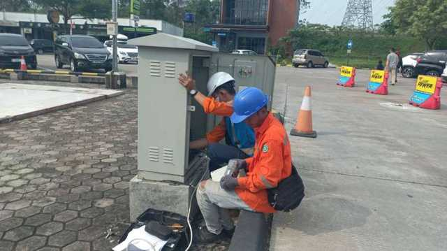
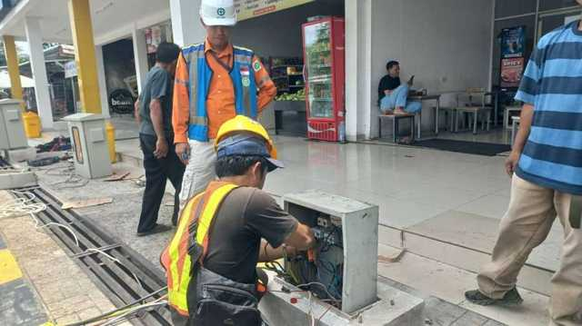
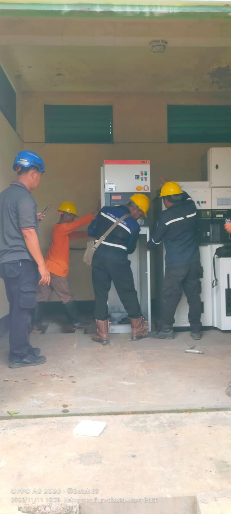
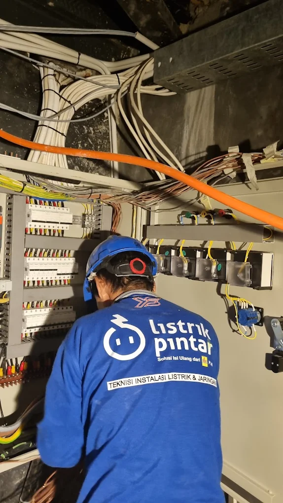
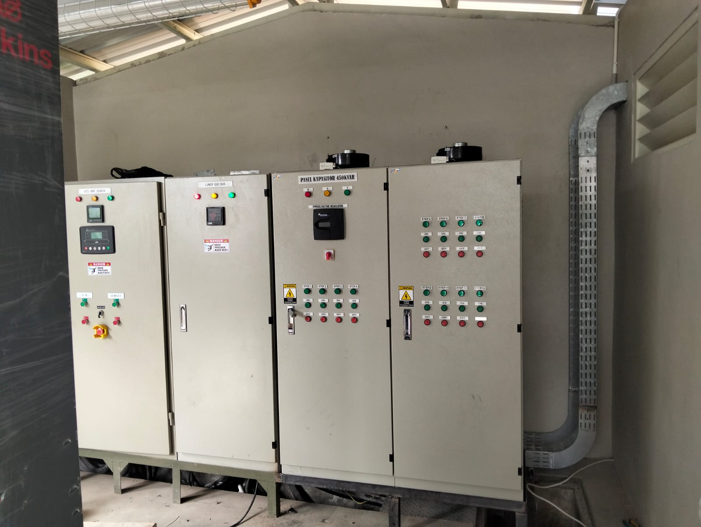
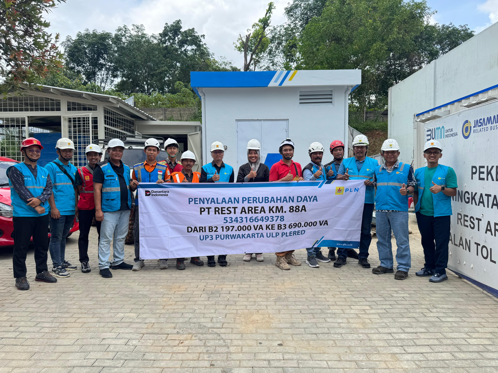

Instalasi
Instalasi Panel Distribusi
Tim teknisi memasang dan merapikan panel listrik di lokasi proyek.
Perusahaan berpengalaman 15+ tahun dalam instalasi listrik, maintenance, dan sistem kelistrikan industri
Hubungi KamiInstalasi listrik baru untuk rumah, kantor, pabrik, dan gedung komersial dengan standar PLN dan PU.
Perawatan berkala sistem kelistrikan untuk menjaga keandalan dan mencegah gangguan operasional.
Desain, pembuatan, dan pemasangan panel listrik MCC, PCC, dan distribusi sesuai kebutuhan.
Perbaikan cepat gangguan listrik 24/7 dengan tim teknisi bersertifikat dan berpengalaman.
Instalasi panel surya dan sistem energi terbarukan untuk penghematan biaya operasional jangka panjang.
Audit energi untuk efisiensi dan optimalisasi sistem kelistrikan dengan laporan lengkap.
PT.Tri Jaya Muktiwari Berkomitmen untuk memberikan hasil pekerjaan terbaik melalui kualitas, integritas, serta pelayanan profesional demi terciptanya kepercayaan dan kepuasan pelanggan.
Kami Tenaga Ahli dan Teknisi kami bersertifikat Lisensi DJK Listrik atau Sertifikat DJK ESDM Bisa di Cek di link (https://skttkdjk.esdm.go.id/web/page/status-permohonan)dan peralatan modern untuk menjamin kualitas pekerjaan yang prima dan tepat waktu.
Kp.Telar Rt.02 Rw 01 Desa Muktiwari
Kec Cibitung Kab Bekasi.17520
------------
WhatsApp: 0812-9692-9581
trijayamuktiwari@gmail.com
Senin - Jum'at: 08.00 - 17.00 WIB
Emergency 24/7
Beberapa dokumentasi pekerjaan dan proyek PT. Tri Jaya Muktiwari.
Tim teknisi memasang dan merapikan panel listrik di lokasi proyek.

Proses pengkabelan panel listrik dilakukan dengan rapi dan sesuai standar.

Instalasi panel ATS-AMF, LVMDP, dan panel kapasitor 450 kVAR untuk kebutuhan industri.

Serah terima pekerjaan peningkatan daya listrik bersama tim PLN di lokasi proyek.

Pemasangan panel distribusi di area komersial.

Penanganan gangguan panel listrik langsung di lokasi klien.

Pengecekan rutin kondisi panel LVMDP dan kapasitor untuk menjaga keandalan sistem.

Pemasangan dan pengecekan panel listrik di area publik.

Pemasangan trafo distribusi lengkap dengan sistem pendingin dan pengaman.

Kolaborasi tim dalam pengecekan panel switchgear di ruang panel.
Kepercayaan klien adalah bukti nyata kualitas kerja kami.
"Pengerjaan instalasi panel listrik di pabrik kami sangat rapi dan tepat waktu. Tim teknisinya profesional dan komunikatif dari awal survei sampai selesai."
"Instalasi PLTS di rumah kami berjalan lancar, tagihan listrik langsung turun signifikan. Tim juga sabar menjelaskan cara kerja sistemnya."
"Layanan emergency 24 jamnya benar-benar terbukti. Gangguan listrik mendadak di kantor kami ditangani cepat tanpa mengganggu operasional besok harinya."
Beberapa hal yang paling sering ditanyakan calon klien kami sebelum memulai proyek.
Kami menangani instalasi listrik baru, maintenance rutin, pembuatan & pemasangan panel listrik (MCC/PCC/distribusi), troubleshooting gangguan listrik, instalasi PLTS/energi terbarukan, hingga energy audit — untuk rumah tinggal, kantor, pabrik, maupun gedung komersial.
Ya. Seluruh tim teknisi kami bersertifikat keahlian (SLO/SLA) dan berpengalaman menangani proyek kelistrikan skala rumah tangga hingga industri sesuai standar PLN dan PU.
Setiap pekerjaan yang kami selesaikan disertai garansi. Detail masa garansi disesuaikan dengan jenis dan skala pekerjaan, dan akan dijelaskan lengkap saat penawaran.
Durasi pengerjaan tergantung skala dan kompleksitas proyek. Instalasi rumah tinggal umumnya beberapa hari, sementara proyek panel listrik atau PLTS skala industri bisa memakan waktu beberapa minggu. Estimasi pasti kami berikan setelah survei lokasi.
Ya, kami menyediakan layanan troubleshooting emergency 24/7 untuk gangguan listrik mendadak, di luar jam operasional reguler Senin–Jumat 08.00–17.00 WIB.
Anda bisa menghubungi kami via WhatsApp atau mengisi formulir kontak di website ini. Tim kami akan menjadwalkan survei lokasi (jika diperlukan), lalu memberikan penawaran harga dan rencana kerja secara detail sebelum proyek dimulai.
Bisa. Kami menangani instalasi PLTS mulai dari skala rumah tinggal untuk efisiensi tagihan listrik, hingga skala industri untuk penghematan biaya operasional jangka panjang.
Kami berbasis di Cibitung, Kabupaten Bekasi, dan melayani area Bekasi serta sekitarnya. Untuk proyek di luar area tersebut, silakan hubungi kami langsung untuk konfirmasi ketersediaan.